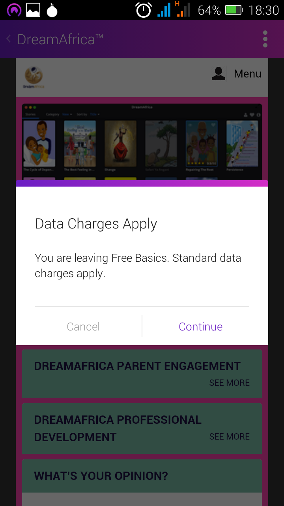
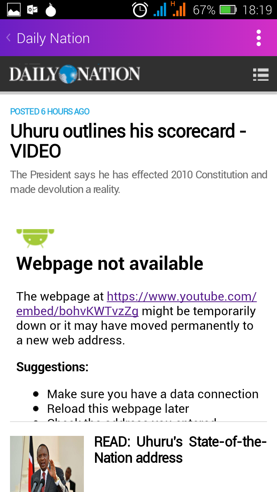
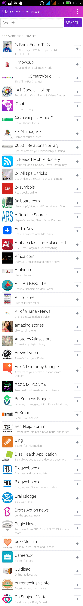
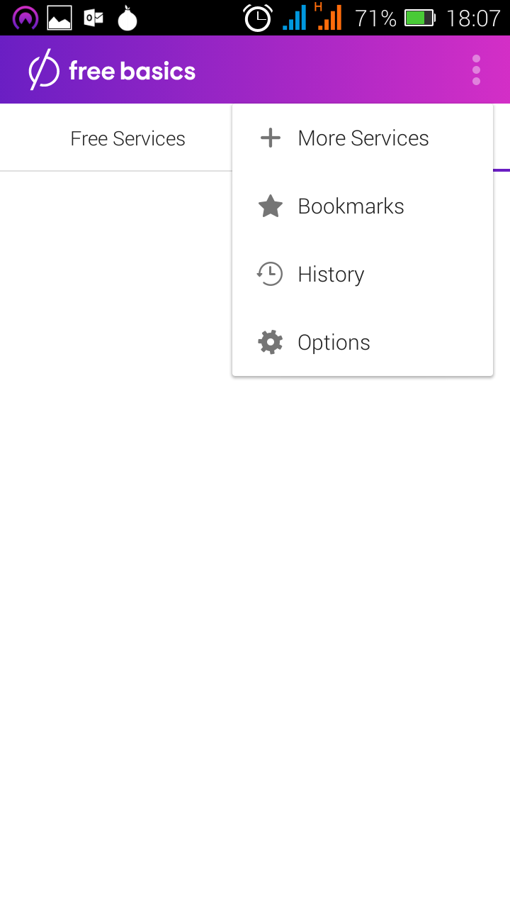
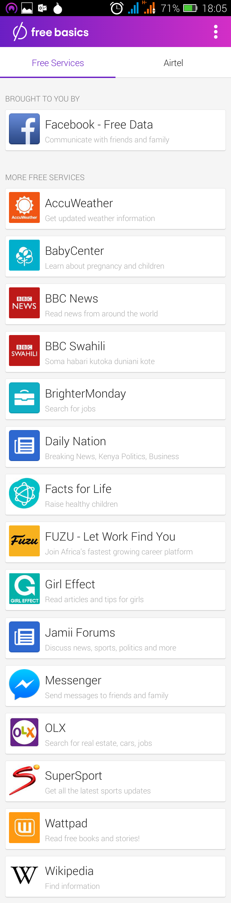

<iframe src="https://gv-interactives.github.io/fbx-interactive/kenya/ru.html" name="fbxinteractive" width="100%" height="504px" frameborder="no" scrolling="no" align="center"></iframe>
Close









Как Free Basics выглядит в Кении?
Если вы подключены к мобильному оператору Aritel в Кении, то вы можете использовать Free Basics.
Если у вас нет доступа в интернет, вы можете приобрести сим-карту, которая автоматически загрузит приложение Free Basics на ваш телефон.
Если у вас есть WiFi-соединение или мобильный интернет, то вы можете скачать Free Basics из магазина приложений Google Play.
This interactive holds a Creative Commons Attribution 3.0 license. Embed